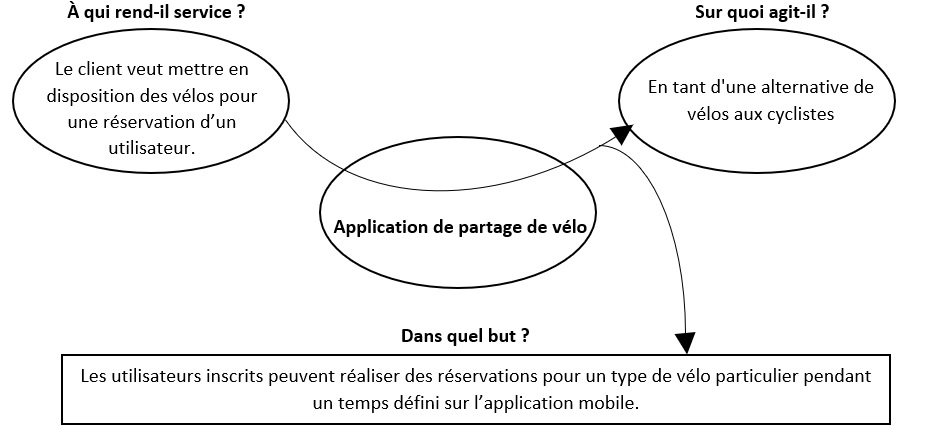

1.1 Contexte et définition du projet
-
Aujourd’hui, l’importance de l’utilisation de transport non polluants est vitale pour l’environnement. Cela permet de réduire la pollution et l’utilisation excessive des voitures dans une ville. Il existe différentes options sur le marché comme le vélo et le scooter traditionnel ou électrique.
C'est une alternative d’utilisation moins coûteuse, plus saine et plus écologique. Malheureusement, ce n’est pas un marché aussi vaste, car seulement dans les grandes villes (métropolitaines) nous pouvons trouver le service de vélos et scooters partagés. La plupart de temps, ils sont disponibles dans quelques endroits de la ville ou des stations pour une période limitée. Cela fait qu’il ne s’agit pas d’un moyen si demandé par le public.
1.2 Objectif général
-
L’objectif de ce projet concerne au besoin du client. Il veut mettre en disposition différentes vélos sur un système capable de gérer des réservations. Ils seront réalisés pour les utilisateurs inscrits sur l’application développée, ils peuvent indiquer quel type de vélo et la durée d’utilisation. Ce temps, il doit également être indiqué sur l'application par l’utilisateur.
Il convient de souligner que l’application permettra aux utilisateurs visualiser les nombres de vélo disponibles dans la ville, le tarif correspondant au profil ainsi que les différents types de vélos. De la même manière l’application disposera un système de détection des chutes pour les vélos, et la lecture de température et humidité qui seront stockés pour l'administrateur grâce aux capteurs intégrés afin de protéger ses vélos.
1.3 Objectifs spécifiques
-
• Créer un compte
• Gérer un compte
• Faire ou annuler une réservation
• Gérer le détail d’une réservation
• Consulter la liste des réservations réalisées
• Voir les différents vélos disponibles
• Enregistrer les valeurs de température et d’humidité d’un vélo
• Suivre pendant le trajet d’un vélo en cas de chute
1.4 Étude Concurrentielle
-
Tout d’abord, il est nécessaire de réaliser une étude concurrentielle. Cette étude permettra connaître l'existence de différentes applications et services sur le marché de vélos partagés. Ainsi, qu'il permettra de regarder les points forts et les faiblesses de chacune. On trouvera ci-dessous quelques-unes avec une description détaillée et fonctionnements respectifs :
| Application | Avantages | Inconvénients | Prix |
|---|---|---|---|
Match my Bike (Suisse)  |
• La plateforme compte avec un système de localisation pour le vélo. • Seulement l’utilisateur autorisé peut accéder au vélo qu’il a réservé. L'ouverture du cadenas connecté se fait automatiquement grâce à la présence du smartphone, à l'aide de Bluetooth. • Compatible avec Bluetooth 4.x (Low Energy) et Bluetooth 5. • L’entreprise offre un antivol robuste en forme de U lors de votre inscription. Il s’ouvre avec votre smartphone par connexion Bluetooth. • Il existe une application mobile pour les réservations ou bien utiliser l’application web, très agréable et intuitive pour les utilisateurs. |
• C’est un service qui vient de commencer. Aujourd’hui, les villes pionnières qui accueillent
Match my Bike sont 7 (Berne, Bienne, Fribourg,
Thoune,
Lausanne, Genève et Yverdon). Donc, l’application seulement sert dans ces villes de la Suisse.
|
• L’application mobile est gratuite ainsi que le web, il faut s'inscrire pour pouvoir réserver ou mettre en dispositions des vélos. |
| Vélib (Paris,
France) |
• Sur l’application on peut accéder aux vélos mécaniques et des vélos électriques. • Pour les usagers moins assidus, des pass 1 ou 7 jours sont mis à leur disposition. • Vélib’ compte aujourd’hui avec 1300 stations et plus de 12 000 vélos en circulation. • Il compte avec une application mobile et web pour la gestion des vélos et réservations à travers d’une compte d’utilisateur. • Il offre GPS sur l’application pour le déplacement d’un point à autre. |
• C’est une application qui concerne à la capitale française (Paris) et sa petite
couronne. • L’application présente quelques inconvénients pour les utilisateurs lorsqu’ils vont à déverrouiller le vélo avec le NFC. |
• L’application mobile est gratuite pour télécharger, il faut s'inscrire pour pouvoir réserver
les vélos et ajouter une carte bancaire pour le paiement correspondant. • La souscription la plus onéreuse coûte 8,30 euros par mois, et vous donne accès gratuitement à un Vélib’ mécanique durant 1h. • Les deux premiers trajets sont gratuits pendant 45 minutes, mais le troisième est facturé 1 euro. |
| Bicloo (Nantes,
France) |
• Elle est composée de 123 stations et 1230 vélos (prévision). • Chaque biclooPlus est équipé d’un système antivol avec un verrou autobloquant pour les arrêts temporaires en dehors d'une station (Cette innovation a été activée récemment). |
• L’application a une portée dans la ville de Nantes. • L’application mobile présente de problèmes pour les utilisateurs lorsqu’ils font des réservations, des rénovations d’abonnements et soucis avec la géolocalisation. |
• L’application mobile est gratuite pour télécharger, il faut s'inscrire pour pouvoir réserver
les vélos et ajouter une carte bancaire pour le paiement correspondant. • Plusieurs formules sont proposées: un forfait gratuit pour 30 minutes d’utilisation, et d’autres forfaits coûtent entre 2 et 36 euros selon les besoins. |
| Vélo’v (Lyon,
France) |
• Elle est composée de 348 stations et 4000 vélos (on estime). • Il montre sur l’application les vélos plus disponibles plus proches grâce au GPS. • Elle offre différents plans soit par jour, soit pour toute l’année. • Il est possible de réaliser des réservations sur l’application mobile ou web. |
• L’application a une portée dans la ville de Lyon. • La plupart de formules ont un prix plus élevé en comparaison du Bibloo. |
• L’application mobile est gratuite pour télécharger, il faut s'inscrire pour pouvoir réserver
les vélos et ajouter une carte bancaire pour le paiement correspondant. • Plusieurs formules vous sont proposées : la plupart de formules ont un prix plus élevé en comparaison du Bicloo. |
| Green Bike (La Rochelle,
France) |
• C’est une entreprise qui offre différents vélos pour la famille, les petits et même des vélos
électriques. • L'application propose louer un casque à 1€ ou bien une assurance de 3€ par jour. • Elle offre différents plans soit par jour, soit pour toute l’année. • Le point plus fort qui a le service: dispose d’une succursale dans la ville de Saint-Dié-des-Vosges (Regarder la carte) dans laquelle on peut loeur des vélos à différents prix. |
• Il n’est pas possible de faire des réservations pour Saint-Dié-des-Vosges depuis le site
web. • Elle ne dispose pas d’une application mobile. • En l’absence d’une app mobile ou d’une application web pour la succursale à Saint-Dié, les gens doivent soit aller physiquement pour effectuer le processus soit entrer en contact avec leurs réseaux sociaux comme Facebook, ce qui n’est pas pratique. |
L’application offre différents forfaits et prix en fonction du vélo. • Manhattan 28'': 2h = 6€, 4h = 10€, 1 jour = 14€. • VTT Montagne: 2h = 10€, 4h = 15€, 1 jour = 18€. • Child trailer: 2h = 6€, 4h = 9€ 1 jour = 12€. • Electric: 2h = 14€, 4h = 18€ 1 jour = 28€. |
Vélhop (Strasbourg,
France) |
• L'application offre différents vélos: vélo classique, enfant ou adulte, vélo tandem, vélo à
assistance électrique, etc. • Le service compte avec 6800 vélos, 20 stations automatiques et 5 boutiques. • On peut réserver en ligne. D'abord, il faut créer un compte à partir du site web ainsi que le renouveler. • Le service offre différents forfaits, soit par les enfants ou les étudiants avec un prix accessible. |
• L’application a une portée dans la ville de Strasbourg. • Le service n’a pas une application mobile pour réaliser les réservations. Donc, il faut utiliser l’application web ou la station pour louer un vélo. |
L’application offre différents forfaits et des prix en fonction du vélo et situation du
travail. • Vélo adulte - Tarif plein: Journée = 6€, 3-7 jours = 18€, Mois = 23€, Année =84€. • Vélo adulte - Tarif réduit (-26 ans): Journée = 6€, 3-7 jours = 18€, Mois = 23€, Année =68€. • Accessoire (siège bébé): Journée = 2€, 3-7 jours = 6€, Mois = 10€, Année =30€. • Forfait étudiant (10 mois): Année =42€. • Forfait étudiant boursier (2021-2022): Année =10€. |
-
Nous pourrions continuer en analysant différentes applications de partage de vélo, mais comme nous pouvons le constater, la plupart de service n’ont qu’une portée à l’intérieur d’une ville ou de certaines parties des stations.
Si bien, ils possèdent une caractéristique demandée par le client : l’anti-vol, mais ce n'est pas possible de faire usage. L'application la plus proche pour résoudre au besoin du client est Green Bike, disponible dans la ville de Saint-Dié, mais sans complètement le faire. La raison évidemment : peu pratique, nous devons aller à l’entreprise pour réserver un vélo parce qu’elle n’a pas une application mobile ou une application web pour réaliser des réservations.
De plus, ils sont de services qui ont déjà leurs propres vélos et tarifs. Il n’y pas un service capable de gérer les besoins de notre client. Pour telle raison, une progressive web application (PWA) sera développée afin de résoudre le problème de notre client.
1.5 Cadre Théorique
-
1.5.1 Développement PWA
Netbeans
NetBeans est un environnement de développement intégré (IDE) pour Java, qui permet également de supporter autres langages, comme Python, C, C++, XML et HTML. De plus, Netbeans est disponible sous Windows, Linux ou Mac OS.
C'est un IDE moderne, il permet d'accéder rapidement à la documentation détaillée, de naviguer dans les sources et d’effectuer des recherches d'usage des classes, méthodes et propriétés. Netbeans indique à l'utilisateur les erreurs et fait des propositions pour y remédier. L'EDI NetBeans fournit des outils pour construire tous les composants Java EE, ce qui inclut les Enterprise Java Beans (EJBs), les pages web, les servlets, et les services web. (Dayre, P. 2012).
HTML
HTML (HyperText Markup Language), c’est un format de présentation de données permettant la création des pages web qui peuvent être lues dans des navigateurs. Selon l’enseignant de l’Université Nice Sophia Antipolis Lozi (n, d.), HTML c’est un format descriptif des paragraphes, images, liens et tableaux en utilisant une grammaire à base de balises.
Ce n’est pas un langage de programmation qui permet de structures conditionnelles (if, else) ou de boucles (for, while) par exemple. Pour programmer, il faudra utiliser un langage de programmation côte client comme Javascript ou côte serveur (PHP, Java, Perl).
Bootstrap
C’est un framework CSS développé par l’équipe de Twitter. Il correspond à un ensemble de librairies regroupées (fichiers CSS et JavaScript) pour créer des design complexes de manière relativement simple.
Parmi les avantages de l’utilisation de ce framework se trouvent le gain de temps de développement, une certaine robustesse dans l’architecture globale du code et la gigantesque communauté en ligne. (Giraud P, n, d.).
1.5.2 Gestionnaires de Bases de Données
MySQL
C’est un système open source pour la gestion de base de données relationnelle (RDBMS). Une base de données relationnelle permet d’entreposer et d’organiser les données structurées sous forme de tableaux liés entre eux. Nous pouvons définir MySQL en tant qu’un Système de Gestion de Base de Données (SGBD), c’est-à-dire, un logiciel capable de manipuler les données d'une base de données. Parmi les actions que nous pouvons effectuer se trouvent la création, lecture, mettre en jour et suppression. (Bastien, L, 2020).
PhpMyAdmin
C’est une application web qui permet de gérer un serveur de bases de données MySQL. Dans un environnement multi-utilisateur, cette interface écrite en PHP permet également de donner à un utilisateur un accès à ses propres bases de données. Parmi les principales fonctionnalités se trouvent la gestion des utilisateurs et leurs privilèges, importation/exportation de bases de données dans différents formats, la gestion de bases de données, tables, champs et index. (Tournoy, R. 2010).
1.5.3 Langage côte serveur
Java
C’est un langage de programmation orientée objet, il était développé par Sun Microsystems, et maintenant faire partie de l’entreprise Oracle. Le principal avantage de Java est son interopérabilité, c’est-à-dire, la technologie fonctionne aussi bien sur Windows que Mac ou Linux, et sur une myriade d'appareils : ordinateur, téléphone mobile, périphériques TV, consoles de jeux, appareils connectés.
Elle est notamment au cœur du système d'exploitation Android, et exploitée dans le monde entier pour développer des applications mobiles, des jeux, du contenu Web ou des logiciels d'entreprise. Le langage Java permet notamment de développer des forums, des formulaires en ligne, d'écrire des applications, ou créer des programmes exécutables dans un navigateur web. (Deluzarche C, n. d.)
Javascript
C’est un langage de script populaire permettant d’ajouter des fonctionnalités interactives et d’autres contenus web dynamiques aux pages web. Parmi les exemples plus connus : les formulaires, les diaporamas de galeries de photos et les graphiques animés. À différence de Java qui est un langage compilé, JavaScript est un langage interprété qui est interprété ligne par ligne au moment de l’exécution. Enfin, JavaScript est réservé aux navigateurs du client. (Kinsta, 2020).
1.5.4 Serveur Web
Apache Tomcat
C’est une implémentation open source en tant de serveur web pour les applications web réalisées en Java. Il permet d'exécuter des applications web reposant sur les technologies servlets et JSP. (Doudoux J, n.d.)
Api REST
Appelés aussi services web RESTful, REST utilise des méthodes via HTTP (GET, POST) pour récupérer et publier des données entre un périphérique client et un serveur.
1.5.5 Objets connectés
Arduino
C’est une plateforme ouverte (open source) écrite en fonctions C et C ++, il est utilisé pour écrire et charger des programmes sur des plaques compatibles avec Arduino.
Adafruit IO
C’est une solution pour la construction d’applications IoT créée par la société Adafruit. Cette service cloud nous permet de surveiller des données et de réaliser des rayons de contrôle en ligne et tout communiqué avec le protocole simple et efficace MQTT en basant sur de plates-formes comme Arduino, Raspberry pi, ESP32 ou l’ESP8266.
ESP32
Le module ESP32 est une solution Wi-Fi/Bluetooth tout-en-un, intégrée et certifiée qui fournit non seulement la radio sans fil, mais aussi un processeur intégré avec des interfaces pour se connecter à plusieurs périphériques.
Capteur DHT22
Le DHT22 est un capteur numérique de base et à faible coût, nous permet de mesurer de manière facile et efficace la température et l'humidité en raison de sa combinaison deux en un d'un capteur d'humidité capacitif et d'une thermistance. D’ailleurs, il se connecte facilement grâce à un signal numérique sur un seul fil.
Servomoteur
Un servomoteur tourne certes sur un axe, en général l’angle va de 0 à 180°. C’est un moteur continu équipé d'un réducteur (des engrenages). L’un des objectifs de l’usage de cet objet se trouve pour garder la valeur de l’angle.
1.6 Description fonctionnelle des besoins
-

Les exigences décrivent ce que le système doit faire, c’est-à-dire ses exigences fonctionnelles et non fonctionnelles souhaitables par notre client. La saisie des exigences permet de comprendre ce que les clients et les utilisateurs finaux attendent du système à développer. C’est ici, dans le cahier des charges qui ont été les établis.
L’analyse des besoins permettra de mener à bien le projet, et il est donc très important de le réaliser avant de commencer le développement de l’application. De plus, c’est grâce au cahier de charges que nous pouvons formaliser le projet avec le client car il précis toutes les informations nécessaires pour la réalisation, développement et la livraison du projet.
Les Tableaux 1.2 et 1.3 détaillent les exigences que le système doit réaliser et qui répond aux besoins du client en précisant un index, le nom de l’exigence, la description et la priorité (élevée, moyenne, faible). En commençant par les fonctionnelles, qui soulignent les services ou fonctions qui réalisera le système et en terminant avec les exigences non fonctionnelles qui ne correspondent pas à la partie de service ou bien à un module. Ils correspondent à la partie générale de l’application.
| EXIGENCES FONCTIONNELLES |
|---|
| N | Exigence | Description | Priorité |
|---|---|---|---|
| 1 | Création de comptes. | Le système permettra aux utilisateurs créer des comptes avec leurs informations personnelles pour l'utilisation de l'application mobile. | Élevée. |
| 2 | Validation de la compte pour l'accès au système. | Les utilisateurs pourront accéder au système à travers d'un nom d'utilisateur et un mot de passe fait précédemment. | Élevée. |
| 3 | Gestion du profil de l'utilisateur. | Les utilisateurs pourront modifier leurs informations personelles sur l'application (nom, prènom, date de naissance, adresse). | Élevée. |
| 4 | Réservation d'un vélo. | Les utilisateurs pourront demander un vélo disponible sur l'application. Ils devront enregistrer le type de vélo, la durée (date de debut et de fin) et le paiement correspondant. | Élevée. |
| 5 | Modification d'une réservation. | Le système permettra aux utilisateurs de réaliser des modifications aux informations d'une réservation. | Élevée. |
| 6 | Annulation de vélos demandés. | Le système permettra aux utilisateurs de réaliser une annulation d'un vélo réservé précédemment (à condition qu’il soit temps avant du jour). | Élevée. |
| 7 | Consultation de vélos demandés. | Les utilisateurs peuvent consulter les dernières vélos demandés , en regardant sur l'application une liste avec le type du vélo et la durée de l'utilisation. | Élevée. |
| 8 | Protection des vélos. | Le système permettra d'enregistrer la température et l'humidité d'un vélo pendant le trajet. Il sera également équipé d'une détection de chute. | Élevée. |
| EXIGENCES NON FONCTIONNELLES |
|---|
| N | Exigence | Description | Niveau d'exigences |
|---|---|---|---|
| 1 | Interface simple et détaillée. | L'interface du système sera compréhensible et simple par l'utilisateur avec un aspect visuel satisfaisant. C'est-à-dire, un menu bien organisé, intuitif et d'icônes liées à sa fonction pour un comprehension rapide. | Ne pas utiliser de couleurs dangeureuses et agressives. Il faut suivre que 4 couleurs. |
| 2 | Portabilité sur les aplications dévelopées. | Le système doit fonctionner sur différentes plates-formes, soit pour l'ordinateur ou portable (en tant d'Android, IOS). | Le système doit fonctionner sur tous les navigateurs Web modernes et s’adapter à différentes résolutions d’écran. |
| 3 | Sécurité de code. | Le client aura le code développé et le responsable de projet ne pourra pas le divulguer. | Le code source appartiendra au client et le programmateur n’aura pas le droit d’en faire usage. |
1.7 Devis
-
Pour le développement du projet, il n’y a qu’un seul développeur, qui supervisera et réalisera chacune des étapes de l’achèvement du système. Un total de 14 semaines seront consacrées à cet événement, c'est-à-dire, un total de 350 heures (5 jours par semaine avec une journée de 5 heures). Il est prévu un contrat d’un an, qui permettrait au client de la partie de maintenance pendant cette période.
| Étape | Nombre d'heures | Prix | Total |
|---|---|---|---|
| Conception | 70 | 25.00 € | 1750 € |
| Développement | 210 | 25.00 € | 5250 € |
| Test | 30 | 25.00 € | 750 € |
| Maintenance | 40 | 25.00 € | 1000 € |
| TVA | 1750 € | ||
| Total | 10,500 € |
1.8 Méthodologie du projet
-
Tout d’abord, il est nécessaire de définir la structure de notre projet à réaliser, à partir de la méthodologie du logiciel comme les phases de celui-ci. Pour ce faire, nous commencerons par la méthodologie à utiliser, qui est la méthodologie en cascade. Le choix part du fait qu’une seule personne (votre serveur) travaille sur ce projet, c'est pour ça qu'on n'a pas choisi une méthodologie agile comme scrum, dans lequel les tâches sont divisées pour les développeurs, des réunions avec le client ou des livraisons partielles et régulières du produit final ne s’appliquent pas pour le projet. En revanche, avec la méthode en cascade, on travaillera à chacune des phases et on devra conclure avec chacune d’elles pour pouvoir avancer vers d’autres, permettant d’achever le projet à la date prévue pour le client.
1.9 Planning du projet
-
Comme j'ai mentionné dans le devis, on travaillera 5 jours par semaine avec une journée de 5 heures. Nous avons un total de 70 jours de travail (5 jours par 14 semaines = 70 jours). L'image suivante montre le planning prévisionnel avec les étapes et leurs durées en jours :